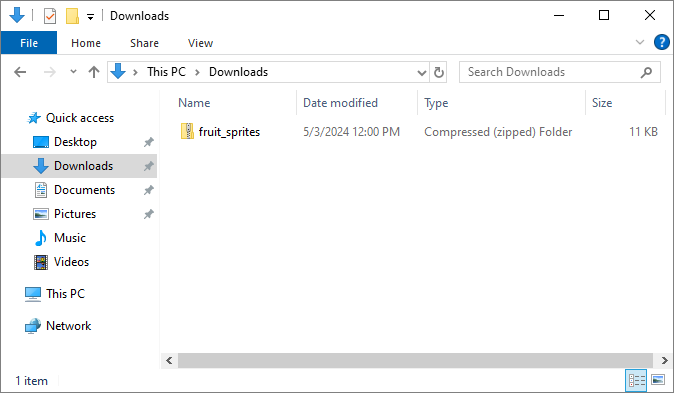
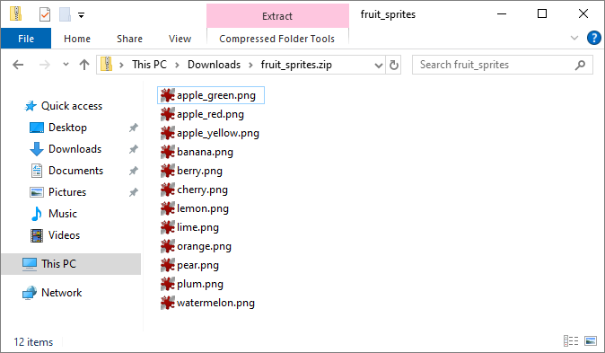
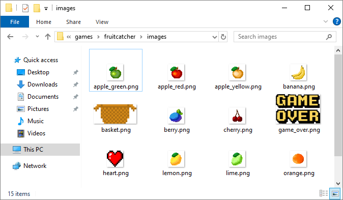
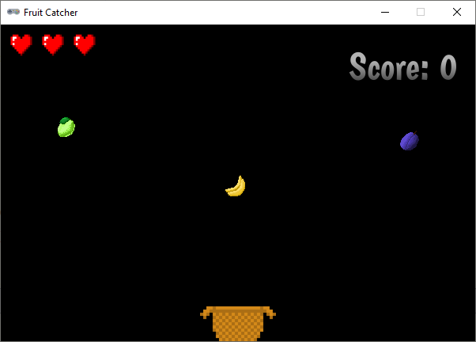
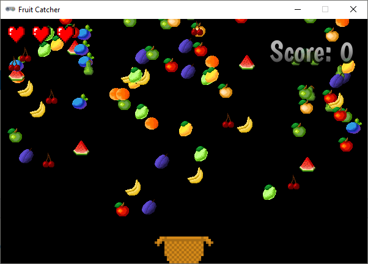
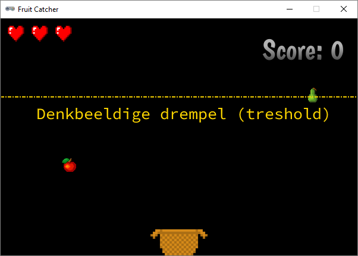
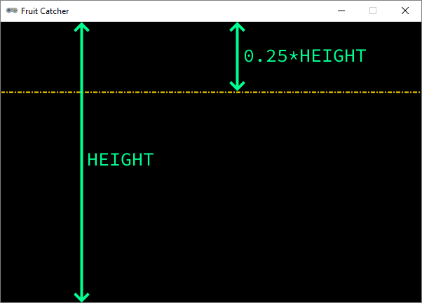

1.6. Uitbreidingen#
In principe is het spel klaar, maar uiteraard kun je er nog allerlei extra’s aan toevoegen, bijvoorbeeld:
verschillende soorten fruit gebruiken in plaats van alleen een appel;
verschillende stukken fruit tegelijk laten vallen in plaats van telkens slechts één;
objecten laten vallen die juist niet mogen worden opgevangen, zoals bommen;
handige upgrades laten vallen, bijvoorbeeld een breder mandje of een extra leven;
de valsnelheid variëren, bijvoorbeeld gelijdelijk laten toenemen om het moeilijker te maken;
de snelheid van mand verhogen naarmate langer op een pijltjestoets wordt gedrukt;
een explosie tonen wanneer het fruit naast de mand valt;
verschillende levels maken.
En uiteraard kun je het spel nog verfraaien met achtergrondafbeeldingen, muziek en geluiden.
In dit deel staan programmeertips voor de eerste twee van de zojuist genoemde uitbreidingen. Uitgangspunt is de code die je tot nu toe hebt gemaakt en waarvan je hieronder een complete weergave ziet.
1import random
2
3# Vensterinstellingen
4WIDTH = 600
5HEIGHT = 400
6TITLE = 'Fruit Catcher'
7MARGIN = 20
8
9# Variabelen voor score en levens
10score = 0
11lives = 3
12
13# Variabelen om de status van het spel bij te houden
14game_over = False
15game_started = False
16
17# Sprite voor het mandje
18basket = Actor('basket')
19basket.speed = 5
20
21# Sprite voor het fruit
22fruit = Actor('apple')
23fruit.speed = 5
24
25# Initialisatie mandje
26def init_basket():
27 basket.x = WIDTH // 2
28 basket.bottom = HEIGHT
29
30# Initialisatie fruit
31def init_fruit():
32 fruit.x = random.randint(0 + MARGIN, WIDTH - MARGIN)
33 fruit.bottom = -1
34
35# Functie draw_score() tekent de score
36def draw_score():
37 screen.draw.text(f'Score: {score}', topright=(580,20), width=360, fontname="boogaloo", fontsize=48, color="#DDDDDD", gcolor="#666666", owidth=1.5, ocolor="black", alpha=0.8)
38
39# Functie draw_lives() tekent de hartjes die de levens voorstellen
40def draw_lives():
41 for life in range(lives):
42 screen.blit('heart', (10 + 40*life, 10))
43
44# Draw() functie
45def draw():
46 screen.clear()
47
48 if not game_started:
49 screen.draw.text('Druk op de spatiebalk', center=(WIDTH/2, HEIGHT/2))
50 return
51
52 if game_over:
53 screen.blit('game_over', ((WIDTH-256)//2, (HEIGHT-170)//2))
54 return
55
56 fruit.draw()
57 basket.draw()
58 draw_score()
59 draw_lives()
60
61# Update() functie
62def update():
63 global score, lives, game_over, game_started
64
65 # Start game
66 if keyboard.space and not game_started:
67 game_started = True
68
69 # Exit de update() functie als de game nog niet is gestart of als het game over is
70 if not game_started or game_over:
71 return
72
73 # Keyboard events
74 if keyboard.left:
75 basket.x -= basket.speed
76 elif keyboard.right:
77 basket.x += basket.speed
78 if basket.right > WIDTH:
79 basket.right = WIDTH
80 if basket.left < 0:
81 basket.left = 0
82
83 # Beweeg fruit
84 fruit.y += fruit.speed
85
86 # Collision detection
87 if fruit.top > basket.top:
88 if basket.collidepoint(fruit.center):
89 score += 1
90 else:
91 lives -= 1
92 if lives <= 0:
93 game_over = True
94 init_fruit()
95
96# HOOFDPROGRAMMA
97init_basket()
98init_fruit()
1.6.1. Verschillende fruitsoorten#
Download het zip-bestand fruit_sprites.zip. Een zip-bestand is een bestand waarin weer andere bestanden verpakt zijn. Je ziet in de Verkenner dat Windows dit bestand een Compressed (zipped) Folder noemt.

Als je in Windows het bestand opent, lijkt het ook net alsof je een map hebt geopend.

Sleep alle afbeeldingen vanuit het zip-bestand naar de fruitcatcher\images folder:

We gaan voor de verschillende fruitsoorten niet verschillende Actor variabelen aanmaken. We gebruiken de variabele fruit die we al hadden en veranderen alleen maar de afbeelding ervan, telkens wanneer een nieuw stuk fruit valt. Daartoe maken we eerst een lijst variabele FRUIT_IMAGES aan met de namen van alle fruit afbeeldingen:
3# Vensterinstellingen
4WIDTH = 600
5HEIGHT = 400
6TITLE = 'Fruit Catcher'
7MARGIN = 20
8
9FRUIT_IMAGES = ['apple_green', 'apple', 'apple_yellow', 'banana', 'berry', 'cherry', 'lemon', 'lime', 'orange', 'pear', 'plum', 'watermelon']
10
11# Variabelen voor score en levens
12score = 0
13lives = 3
Om willekeurig een fruitafbeelding te kiezen, gebruiken we de random.choice() functie van de random module, die we toch al hadden geïmporteerd. We hoeven slechts de volgende regel toe te voegen aan de init_fruit() functie om het te laten werken:
32# Initialisatie fruit
33def init_fruit():
34 fruit.image = random.choice(FRUIT_IMAGES)
35 fruit.x = random.randint(0 + MARGIN, WIDTH - MARGIN)
36 fruit.bottom = -1
Elke Actor in Pygame Zero heeft een image variabele. De waarde van die variabele is de naam van de afbeelding die moet worden getekend. In regel 34 vullen we de fruit.image variabele met een willekeurige naam uit de lijst FRUIT_IMAGES.
1.6.2. Verschillende stukken fruit#
Het spel wordt uitdagender als er meerdere stukken fruit tegelijk naar beneden vallen.

Wat echter ook uitdagender wordt is het programmeerwerk, want om dit voor elkaar te krijgen gaan we een lijstvariabele gebruiken. Dat deden we in de uitbreiding hiervoor ook al, maar dat was nog relatief eenvoudig.
1.6.2.1. Lijsten in Python#
In Python maak je een lijstvariabele door rechte haken te gebruiken:
In dit voorbeeld is mijn_lijst een lijst met stringwaarden, maar je mag allerlei datatypes door elkaar gebruiken in een lijst:
Je haalt een item uit een lijst op door zijn positie in de lijst in te voeren tussen vierkante haken. Deze positie noemen we de index positie. Het eerste item in een lijst heeft altijd index 0.
In dit voorbeeld heeft het item 'Fabiola' index 4, maar je kunt in een lijst ook van achter naar voor tellen met negatieve indices. Zo heeft het item 'Fabiola' óók index -1:
Je kunt het aantal items in een lijst opvragen met de len() functie:
Een item in een lijst wijzigen is heel eenvoudig:
Met de .append() functie, kun je een item toevoegen aan een lijst:
En met de .remove() functie, verwijder je een item uit een lijst:
Met een for loop kun je alle items in een lijst langslopen:
1.6.2.2. Lijst met fruit#
Om in Fruit Catcher meerdere stukken fruit te laten vallen, gebruiken we in plaats van de huidige fruit Actor een lijst van Actors. Om te beginnen vervangen we de fruit Actor variabele door een lege fruits lijst:
Vervolgens vervangen we de init_fruit() functie door een add_new_fruit_to_list() functie, die een nieuwe Actor aanmaakt, de snelheid, afbeelding en positie instelt en het fruit toevoegt aan de fruits lijst:
Op regel 34 krijgt fruit.speed een random waarde, waardoor de stukken fruit met verschillende snelheden zullen vallen.
In de draw() functie moeten alle items in de fruits lijst worden getekend. Dat kan eenvoudig met een for loop:
Uiteraard moeten we ook de update() functie aanpassen. Alle fruit items in de fruits lijst moeten naar beneden vallen en van elk item moeten we checken of het in het mandje terechtkomt:
De nieuwe code verschilt niet veel van de oude, maar let op dat de init_fruit() functie die we in de oude code in regel 100 aanriepen niet meer bestaat. In plaats daarvan gebruiken we fruits.remove(fruit) om de fruit Actor uit de lijst te verwijderen en direct daarna add_new_fruit_to_list() om een nieuwe fruit Actor te maken en in de lijst te zetten.
Als je op dit punt bent aangekomen, kun je je code testen. Wanneer je dat doet, zul je merken dat er ogenschijnlijk niks is veranderd. Er valt telkens maar één stuk fruit naar beneden. Je hebt echter nog maar één regel code nodig om heel veel fruit te laten vallen. Voeg onderaan de update() functie de aanroep add_new_fruit_to_list() toe. Maak daarna van regel 99 commentaar om te voorkomen dat het spel meteen is afgelopen.
Run je code en geniet maar even van de ‘hoorn des overvloeds’.

Nu valt er veel te veel fruit om de game speelbaar te laten zijn. Het ziet er mooi uit, maar voor het spel is het niet zo handig.
Door in regel 105 add_new_fruit_to_list() aan te roepen wordt 60 keer per seconde een nieuw stuk fruit toegevoegd. De update() functie wordt immers 60 keer per seconde uitgevoerd. Het is beter om een nieuw stuk fruit toe te voegen zodra aan een bepaalde voorwaarde is voldaan:
Maar wat voor voorwaarde moet dat zijn? Je zou kunnen kiezen voor een tijdvoorwaarde, bijvoorbeeld elke 3 seconden een stuk fruit aan de lijst toevoegen. Omdat het iets gemakkelijker te programmeren is, kiezen we hier voor een positievoorwaarde: zodra het laatste stuk fruit in de lijst onder een denkbeeldige lijn komt, voegen we een nieuw stuk fruit toe.

In de figuur hierboven zie je de denkbeeldige drempel (in het engels treshold) getekend. De peer rechtsboven gaat juist over de drempel, en op dat moment zou een nieuw stuk fruit moeten worden gemaakt. Om dit te programmeren maken we eerst een treshold variabele:
In regel 27 geven we treshold de waarde 0.25*HEIGHT. Daardoor komt de denkbeeldige lijn op een kwart van de bovenkant van het venster te liggen.

Met het volgende if statement kunnen we er in de update() functie voor zorgen dat een nieuwe stuk fruit aan de lijst wordt toegevoegd zodra laatste stuk fruit in de lijst (met index -1) onder de drempellijn komt:
Merk op dat de aanroep add_new_fruit_to_list() die direct onder fruits.remove(fruit) (in regel 105) stond, is verwijderd. En in regel 102 is de # die we eerder plaatsten om te kunnen testen weggehaald.
Je ziet dat het gebruik van lijstvariabelen heel krachtig is. Ze maken het mogelijk om een stukje code toe te passen op een hele verzameling sprites in plaats van slechts één.